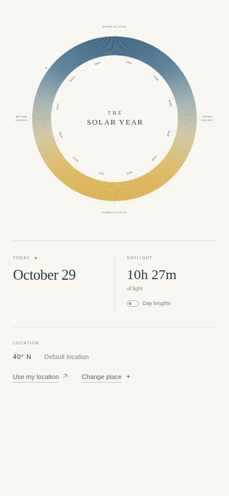
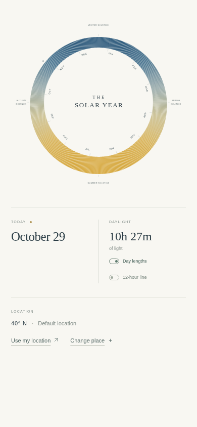
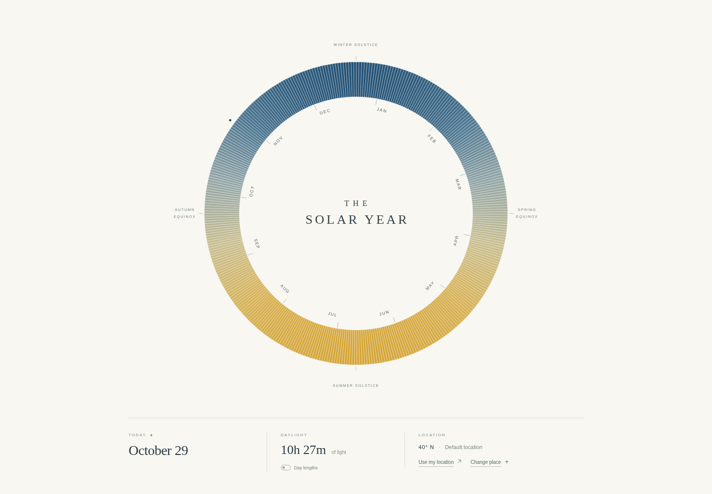
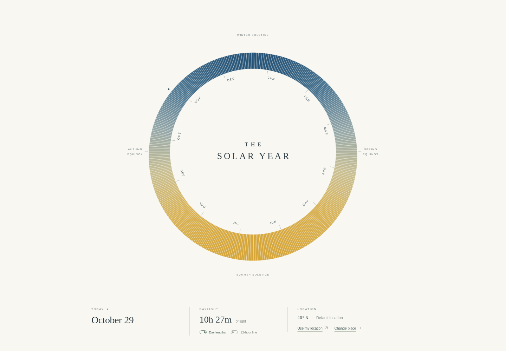
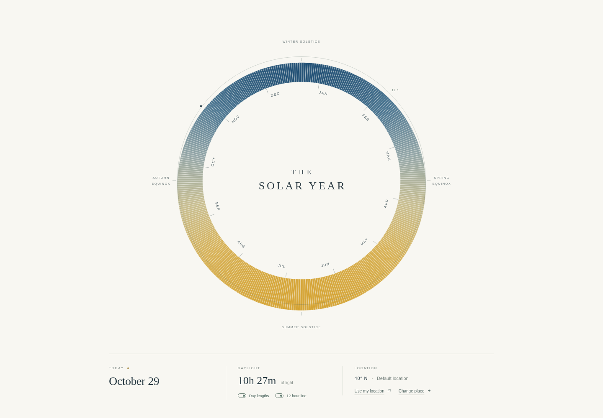
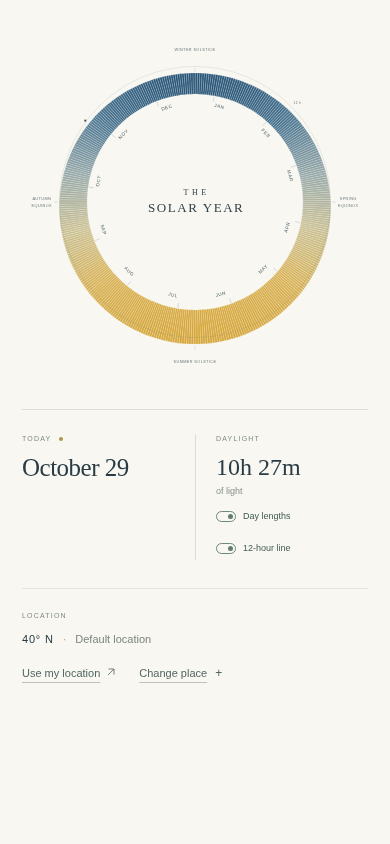
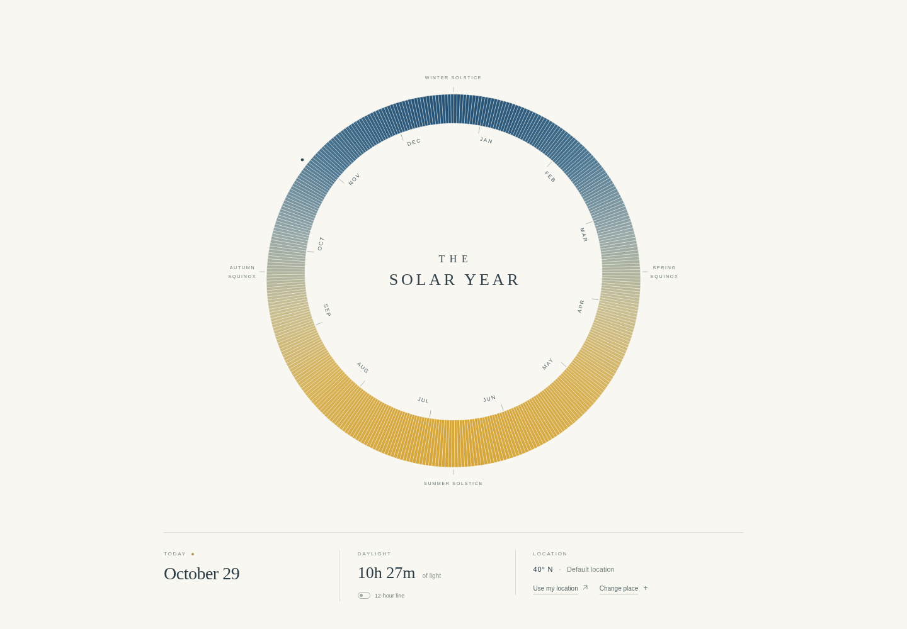

The Solar Year — visual history
A project-only record of each design iteration. Click any image to open the full-page capture. These files are documentation; they are not part of the Solar Year website.
Initial toggle views
Three views, on desktop and mobile.
Change notes






Automatic visual history baseline
Established the automatic archive workflow. No website design change; this baseline preserves all three toggle states on desktop and mobile for future comparisons.
Change notes








Radial daylight as the only view
Removed the classic uniform ring and Day lengths switch. Radial daylight is now the only visualization, with a left-aligned 12-hour reference switch. Brought the solstice labels closer to the contour and balanced the optical spacing of all four seasonal labels.
Change notes
